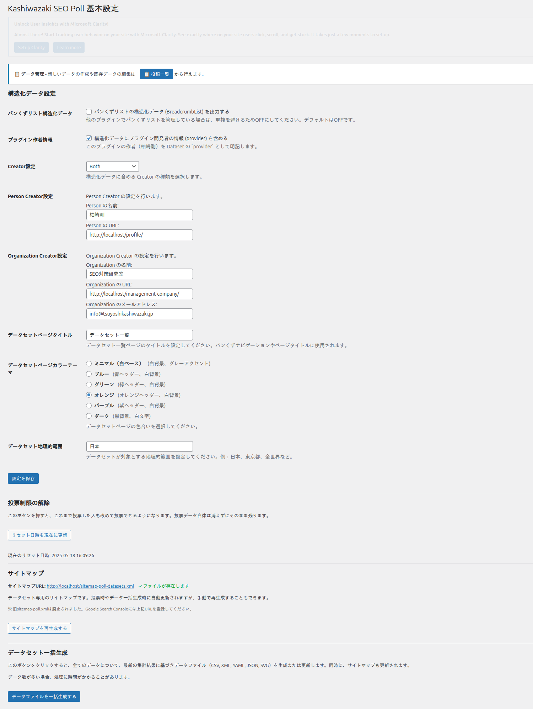

アンケート作成・表示
カスタム投稿タイプでアンケートを作成し、ショートコードで任意のページに埋め込む方法を解説します。Chart.jsによるグラフ表示とデータセット出力についても説明します。
アンケートの作成

1
管理画面左メニュー「アンケート」→「新規追加」をクリック
2
アンケートのタイトル（質問文）を入力
3
選択肢を追加（単一選択または複数選択を設定）
4
グラフの種類（円グラフ・棒グラフ・ドーナツチャート）を選択
5
「公開」をクリックしてアンケートを保存
アンケートの投稿IDは公開後にURL欄やショートコード表示エリアで確認できます。
ショートコードでの埋め込み
作成したアンケートは以下のショートコードで任意の投稿・固定ページに埋め込めます。
| ショートコード | 説明 |
|---|---|
[tk_poll id=123] |
IDが123のアンケートを表示。idにはアンケートの投稿IDを指定 |
1
投稿または固定ページの編集画面を開く
2
ショートコードブロックを追加し、[tk_poll id=123] を入力（123を実際のIDに置き換え）
3
ページを公開・更新してフロントエンドで表示を確認
Chart.jsによるグラフ表示
投票結果は以下のグラフ形式でリアルタイム表示されます。
| グラフ種類 | 説明 |
|---|---|
| 円グラフ (Pie) | 各選択肢の割合を円形で表示 |
| 棒グラフ (Bar) | 各選択肢の投票数を棒グラフで表示 |
| ドーナツチャート (Doughnut) | 円グラフの中央を空けた形式で割合を表示 |
Chart.jsは外部CDN（jsdelivr.net）から読み込まれます。投票後、グラフはAJAXでリアルタイムに更新されます。
データセット出力
アンケート結果は以下の形式でデータセットファイルとして自動生成されます。
| 形式 | 説明 |
|---|---|
| CSV | カンマ区切りテキスト。スプレッドシートやBIツールでの分析に最適 |
| XML | 構造化マークアップ。システム間のデータ連携に利用 |
| JSON | 軽量データ交換形式。Webアプリケーションでの利用に最適 |
| YAML | 人間が読みやすい形式。設定ファイルやドキュメントに利用 |
データセットファイルはDatasetスキーマJSON-LDと連動しており、JSON-LD内のdistribution要素からファイルURLが参照されます。Google Dataset Searchでの発見可能性を高めます。